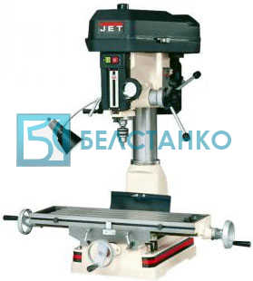
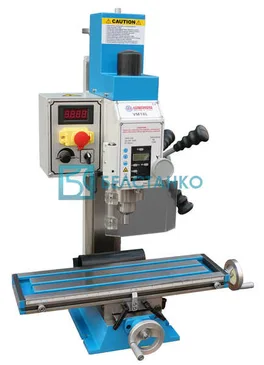
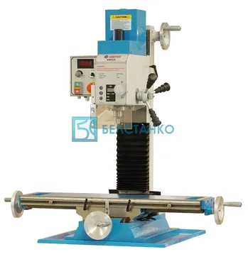
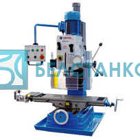
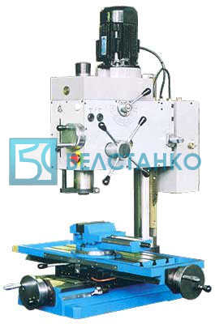
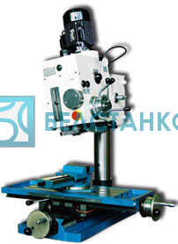

ВСМ-029
Станок настольный сверлильно-фрезерный
735 300 ₽Станок настольный сверлильно-фрезерный
735 300 ₽

Станок фрезерно-сверлильный
190 000 ₽
Станок фрезерно-сверлильный
410 000 ₽
Сверлильно-фрезерный станок
169 800 ₽
Сверлильно-фрезерный станок
205 000 ₽
Сверлильно-фрезерный станок
276 000 ₽



Станок сверлильно-фрезерный
1 956 000 ₽
Станок настольный сверлильно-фрезерный
Цена по запросу

Сверлильно-фрезерный станок
Цена по запросу
Сверлильно-фрезерный станок
Цена по запросу
С УЦИ (СФ32-05) Станок сверлильно-фрезерный
Цена по запросу
Станок сверлильно-фрезерный
Цена по запросу